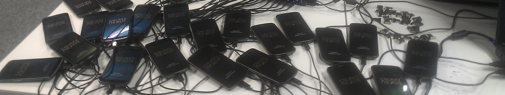
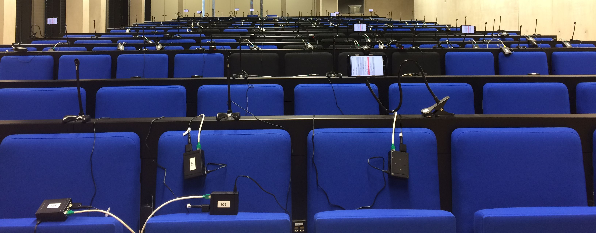
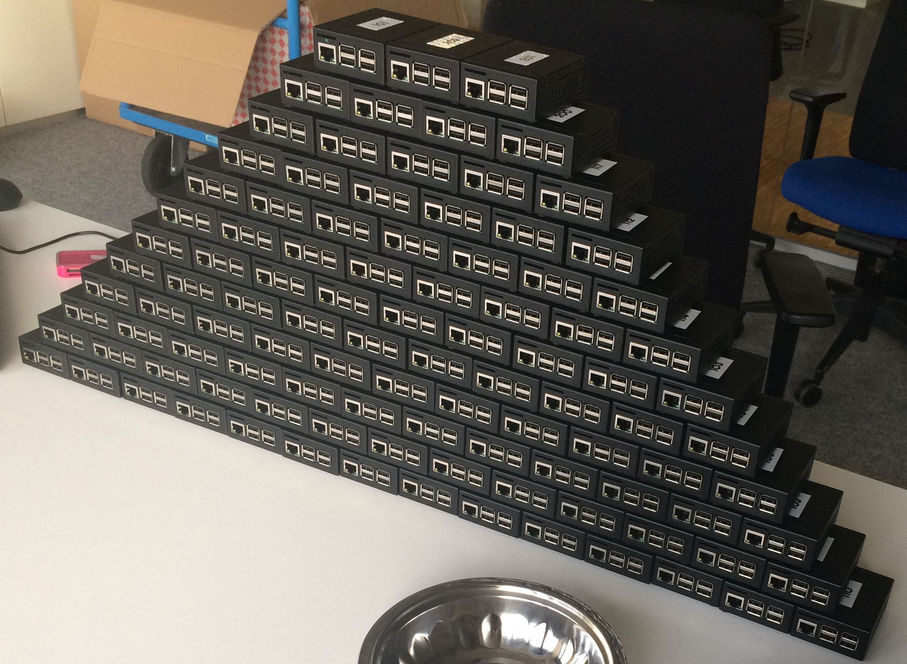

(Katakana: ヴィクトル・エルデーイ)
|
Viktor Erdélyi received his B.Sc. and M.Sc. degrees in informatics from Eötvös Loránd University, Hungary in 2009 and 2011, and his doctoral degree (Dr.-Ing.) in informatics from Saarland University / MPI-SWS, Germany in 2019. From 2026/04, he is a full-time lecturer at Kyoto Tachibana University, Faculty of Digital Media. Previously, he worked at The University of Osaka (2019-2026) as a specially appointed assistant professor and later lecturer. He is also a cross-appointed researcher at RIKEN Center for Computational Science (2025/04-present). His research focuses on practical, unobtrusive, low-maintenance sensing systems, with recent work including smartphone-based mental health monitoring, IoT-based wellbeing monitoring and insights for older adults, and RF-based wireless sensing. His current interests also include privacy-preserving analytics at scale. Affiliations: |
| Title | Status | Authors | Venue |
|---|---|---|---|
| Indoor Drone Propeller Speed Estimation Using Wi-Fi Channel State Information (2025/10) |
Published | Yuta Takao, Viktor Erdélyi, Kazuya Ohara, Yasue Kishino, Anh-Van Ho, Akira Uchiyama | WiMob 2025 (The 21th International Conference on Wireless and Mobile Computing, Networking and Communications) (incl. RIKEN-CCS affiliation) |
| Exploring Effective Sensing Indicators of Loneliness For Elderly Community in US and Japan (2024/05) |
Published | Xiayan Ji, Ahhyun Yuh, Viktor Erdélyi, Teruhiro Mizumoto, Hyonyoung Choi, Sean Lee Harrison, Emma Cho, James Weimer, Hajime Nagahara, Teruo Higashino, George Demiris, Oleg Sokolsky, Insup Lee | CHI EA '24: Extended Abstracts of the CHI Conference on Human Factors in Computing Systems |
| iCareLoop: Data Management System for Monitoring Gerontological Social Isolation and Loneliness (2023/11) |
Published | Xiayan Ji, Ahhyun Yuh, Hyonyoung Choi, Viktor Erdelyi, Teruhiro Mizumoto, James Weimer, Sean Harrison, George Demiris, Takeshi Nakagawa, Takashi Suehiro, Yasuyuki Gondo, Oleg Sokolsky, Teruo Higashino, Insup Lee | The 14th International Conference on Mobile Computing and Ubiquitous Network (ICMU2023) |
| Sonoloc: Scalable positioning of commodity mobile devices (2018/06) |
Published | Viktor Erdélyi, Trung-Kien Le, Bobby Bhattacharjee, Peter Druschel, Nobutaka Ono | ACM MobiSys 2018 37 out of 138 papers accepted |
| SDDR: Light-Weight, Secure Mobile Encounters (2014/08) |
Published | Matthew Lentz, Viktor Erdélyi, Paarijaat Aditya, Elaine Shi, Peter Druschel, Bobby Bhattacharjee | USENIX Security 2014 67 out of 352 papers accepted |
| EnCore: Private, Context-based Communication for Mobile Social Apps (2014/06) |
Published | Paarijaat Aditya, Viktor Erdélyi, Matthew Lentz, Elaine Shi, Peter Druschel, Bobby Bhattacharjee | ACM MobiSys 2014 25 out of 185 papers accepted |
| Title | Status | Authors | Venue |
|---|---|---|---|
| IoT-Based Loneliness Monitoring for Older Adults: Lessons from Japanese and US Communities (2026/02) |
Published | Teruhiro Mizumoto, Viktor Erdélyi, Xiayan Ji, Ahhyun Yuh, Takeshi Nakagawa, Takashi Suehiro, Hajime Nagahara, Yasuyuki Gondo, George Demiris, Oleg Sokolsky, Insup Lee, Teruo Higashino | IEEE Access (incl. RIKEN-CCS affiliation) |
| SMILE: Sensor Data-driven Detection and Counterfactual Pattern Analysis for Loneliness in Older Adults (2026/02) |
Published | Xiayan Ji, Ahhyun Yuh, Viktor Erdélyi, Teruhiro Mizumoto, Hyonyoung Choi, Sean Lee Harrison, Emma Cho, Takashi Suehiro, Takeshi Nakagawa, Cheng Yutian, Yasuyuki Gondo, Hajime Nagahara, Teruo Higashino, George Demiris, Oleg Sokolsky, Insup Lee | ACM Transactions on Computing for Healthcare (incl. RIKEN-CCS affiliation) |
| Detecting Subtle Signs of School Attendance Issues Using Smartphone-based Sensing (2024/12) |
Published | Viktor Erdélyi, Teruhiro Mizumoto, Yuichiro Kitai, Daiki Ishimaru, Hiroyoshi Adachi, Teruo Higashino, Manabu Ikeda | IEEE Access |
| Criteria for detection of possible risk factors for mental health problems in undergraduate university students (2023/06) |
Published | Daiki Ishimaru, Hiroyoshi Adachi, Teruhiro Mizumoto, Viktor Erdelyi, Hajime Nagahara, Shizuka Shirai, Haruo Takemura, Noriko Takemura, Mehrasa Alizadeh, Teruo Higashino, Yasushi Yagi, Manabu Ikeda | Frontiers in Psychiatry, section Public Mental Health |
| Title | Status | Authors | Venue |
|---|---|---|---|
| A Preliminary Study on Angle of Arrival Estimation by MUSIC Algorithm Using Backscatter Tags (2024/03) |
Published | Yudai Yamaguchi, Viktor T. Erdelyi, Akira Uchiyama, Teruo Higashino | WiSense 2024 (PerCom 2024 workshop) |
| Learn to See: A Microwave-based Object Recognition System Using Learning Techniques (2021/01) |
Published | Viktor Erdélyi, Hamada Rizk, Hirozumi Yamaguchi, Teruo Higashino | MFSens 2021 (First International Workshop on Maintenance-Free Context Sensing) |
| Title | Status | Authors | Venue |
|---|---|---|---|
| Poster: Activity Recognition Using CSI Backscatter with Commodity Wi-Fi (2024/06) |
Published | Viktor Erdelyi, Kazuki Miyao, Akira Uchiyama, Tomoki Murakami | MobiSys 2024 |
| Title | Status | Authors | Venue |
|---|---|---|---|
| iCareLoop: Closed-Loop Sensing and Intervention for Gerontological Social Isolation and Loneliness (2023/05) |
Published | Xiayan Ji, Ahhyun Yuh, Hyonyoung Choi, Amanda Watson, Claire Kendell, Xian Li, James Weimer, Hajime Nagahara, Teruo Higashino, Teruhiro Mizumoto, Viktor Erdélyi, George Demiris, Oleg Sokolsky, Insup Lee | ICCPS 2023 WIP session |
| Towards Activity Recognition Using Wi-Fi CSI from Backscatter Tags (2023/03) |
Published | Viktor Erdelyi, Kazuki Miyao, Akira Uchiyama, Tomoki Murakami | PerCom 2023 WIP session |
| Title | Status | Authors | Venue |
|---|---|---|---|
| Short: Integrated Sensing Platform for Detecting Social Isolation and Loneliness In the Elderly Community (2023/06) |
Published | Xiayan Ji, Xian Li, Ahhyun Yuh, Claire Kendell, Amanda Watson, James Weimer, Hajime Nagahara, Teruo Higashino, Teruhiro Mizumoto, Viktor Erdélyi, George Demiris, Oleg Sokolsky, Insup Lee | IEEE/ACM CHASE 2023 |
| Title | Status | Authors | Venue |
|---|---|---|---|
| Brave New World: Privacy Risks for Mobile Users (2015/01) |
Published | Paarijaat Aditya, Bobby Bhattacharjee, Peter Druschel, Viktor Erdélyi, Matthew Lentz | Mobile Computing and Communications Review |
| Title | Status | Authors | Venue |
|---|---|---|---|
| Indoor Drone Propeller Speed Estimation Using Wi-Fi CSI (Demo) (2025/11) |
Published | Yuta Takao, Viktor Erdélyi, Kazuya Ohara, Yasue Kishino, Anh-Van Ho, Akira Uchiyama | DPS Workshop 2025 (incl. RIKEN-CCS affiliation) |
| Evaluation of Indoor Drone Propeller Speed Estimation Using Wi-Fi CSI (Technical Report) (2025/07) |
Accepted | Yuta TAKAO, Viktor ERDÉLYI, Kazuya Ohara, Yasue Kishino, Anh-Van HO, Akira UCHIYAMA | IEICE Technical Report (電子情報通信学会技術研究報告コミュニケーションシステム研究会, vol. 125, no. 107, CS2025-25, pp. 54-59, 2025年7月.) |
| A Preliminary Study on Estimating Human Respiration Rate with Bluetooth Channel Sounding (Technical Report) (2025/07) |
Accepted | Hiroya Nakata, Viktor Erdélyi, Chaoran Li, Kenji Kato, Akira Uchiyama | IEICE Technical Report (電子情報通信学会技術研究報告コミュニケーションシステム研究会, vol. 125, no. 107, CS2025-26, pp. 60-64, 2025年7月.) |
| A Proposal for Indoor Drone Propeller Speed Estimation Using Wi-Fi CSI (Technical Report) (2025/03) |
Accepted | Yuta Takao, Viktor Erdélyi, Kazuya Ohara, Yasue Kishino, Anh-Van Ho, Akira Uchiyama | IEICE Technical Report (電子情報通信学会技術研究報告コミュニケーションシステム研究会, vol.124, no. 416, pp.19-24, 2025年3月) Research Committee Chair's Award |
| A Proposal for Human Presence Detection Using Bluetooth Channel Sounding (Technical Report) (2025/03) |
Accepted | Hiroya Nakata, Viktor Erdélyi, Chaoran Li, Kenji Kato, Akira Uchiyama | IEICE Technical Report (電子情報通信学会技術研究報告コミュニケーションシステム研究会, vol.124, no. 416, pp.13-18, 2025年3月.) Research Committee Chair's Award |
| Estimating University Students' Sleep Habits Using Smartphone Activity Data (Conference) (2024/06) |
Published | Keita Yamaguchi, Hiroki Kudo, Viktor Erdelyi, Teruhiro Mizumoto, Teruo Higashino | DICOMO 2024 |
| A Preliminary Study on AoA and ToF Estimation of Backscatter Tags using MUSIC Algorithm (Poster) (2024/01) |
Published | Yudai Yamaguchi, Viktor Erdélyi, Akira Uchiyama, Teruo Higashino | SeMI 2024 (Sensor Network and Mobile Intelligence Research Group) |
| Towards Activity Recognition Using Wi-Fi CSI from Backscatter Tags in Indoor Environment (Poster) (2024/01) |
Published | Kazuki Miyao, Akira Uchiyama, Viktor Erdelyi, Tomoki Murakami | SeMI 2024 (Sensor Network and Mobile Intelligence Research Group) |
| A Preliminary Study on Activity Recognition by Wi-Fi Imaging (Technical Report) (2022/01) |
Published | Kazuki Okawara, Akira Uchiyama, Viktor Erdelyi, Tomoki Murakami, Hirantha Abeysekera, Teruo Higashino | IEICE Technical Report |
| A Microwave-based Object Recognition System Using Learning Techniques (Technical Report) (2021/05) |
Published | Viktor Erdelyi, Hamada Rizk, Hirozumi Yamaguchi, Teruo Higashino | IEICE Technical Report |
| A Preliminary Study on Wi-Fi CSI Imaging (Technical Report) (2021/02) |
Published | Kazuki Okawara, Akira Uchiyama, Viktor Erdelyi, Tomoki Murakami, Hirantha Abeysekera, Teruo Higashino | IEICE Technical Report |
| Implementation of harmonic-percussive sound separation for Audacity (Demo) (2015/12) |
Published | Viktor Erdélyi, Nobutaka Ono, Shigeki Sagayama | ISMIR 2015 |
I had the honor to have some deep-dive discussions with Tom Campbell, physicist and author of the My Big TOE (MBT) trilogy. In this series, we discuss the concept of consciousness in the context of computers, how he views the possibility of conscious computers from the perspective of his MBT theory, how we could use recent advances in AI technology (such as deep learning, reinforcement learning, large language models) to build a conscious computer, and some speculations about what role conscious computers could play in a future society.
His webpage can be found at https://www.my-big-toe.com/ and http://www.tomcampbell.info/.
  |
 |
So far, I worked on several research projects. I worked on smartphone-based mental health monitoring systems (deployed with 58 university students), detecting early signs of social withdrawal and internet addiction. The methods used in this project are now being implemented as a university-wide student support app (NEMUMIRU) at the University of Osaka. Related to this project, we filed a patent for smartphone sensing technology supporting student wellbeing. I also worked on building IoT-based home sensing infrastructure for elderly loneliness monitoring (33 elderly participants, Japan-US collaboration with the University of Pennsylvania). In the same project, I am also involved in the development of a chatbot-based loneliness intervention system for older adults. In this project, we are currently considering ways to enable larger scale adoption by working with older adult communities. Other projects include designing and developing RF-based sensing systems using backscatter tags, WiFi CSI, and microwave signals for a variety of applications such as wearable-free activity recognition, drone propeller speed measurement, and wireless presence detection. I am also working on extending the communication range of backscatter sensing systems by exploring alternative modulation schemes (QAM, LoRa-like) and neural-network-based signal processing. In parallel, I am developing RA-DNG, a distributed secure noise generation protocol for differentially private computation in resource-asymmetric settings, with an end-to-end evaluation targeting Fugaku-class HPC as the aggregator and Raspberry Pi-grade devices as lightweight participants (JST K Program / SDC4Society, collaboration with Terada lab, Kyoto Tachibana University).